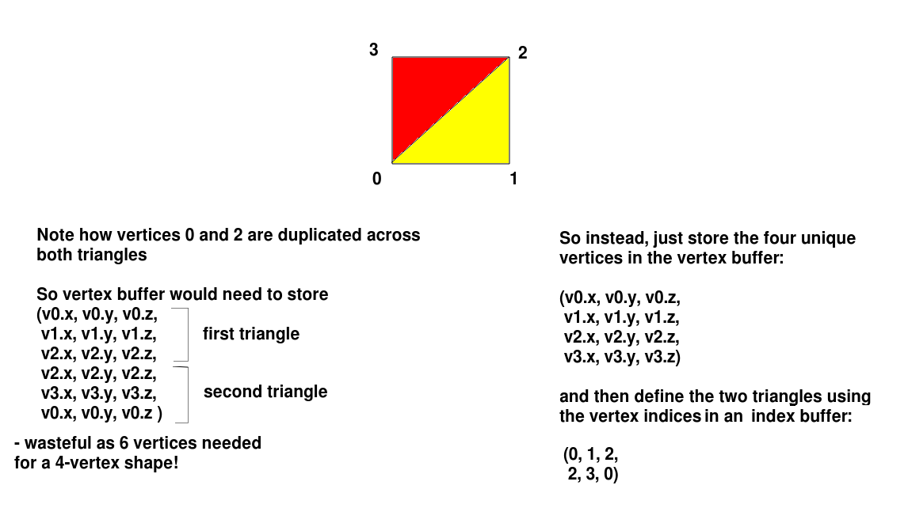
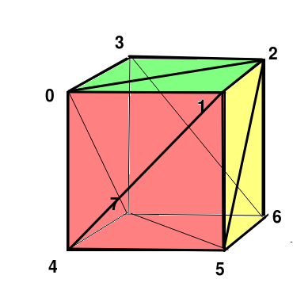

Today we will look at drawing more complex shapes made up of individual triangles by looking at index buffers.
So far we have just been drawing single triangles. However in most cases we're interested in drawing more complex 3D polygons. The key thing is that more complex shapes are made up of triangles. So we can draw a shape by drawing the individual triangles making up the shape.
One way of doing this would be to put all vertices of all triangles making up the shape in a buffer. For example, if we have two triangles making up one face of a cube, with vertices at (0,0,0) (1,0,0) (1,1,0) and (0,1,0) we can divide it into two triangles, with vertices at (0,0,0) (1,0,0) (1,1,0) for the first triangle and (0,0,0) (0,1,0) (1,1,0) for the second triangle. So we could create a buffer with 6 vertices (2 triangles).
However this is inefficient in terms of memory usage. Our square face contains only four vertices, while we are using six to draw it (two triangles of three vertices each).
To deal with this we can use vertex indices. We store each vertex only once in a buffer and then create another buffer of indices to define how the shapes are drawn. So for example, to draw our square face we create one buffer with our vertices:
(0,0,0) (1,0,0) (1,1,0) (0,1,0)and then an index buffer containing these values:
0,1,2, 2,3,0The index buffer contains the indices of each vertex that will be drawn, rather than the vertex itself. So with the above index buffer, we can see that the first triangle will be drawn with vertices 0,1 and 2 (ie. (0,0,0) (1,0,0) (1,1,0)) and the second triangle will be drawn with vertices 2, 3 and 0 (ie. (1,1,0) (0,1,0) (0,0,0)).
This is shown below:

Hopefully it should be obvious that repeating indices is a good deal less wasteful of memory than repeating the vertices themselves! The indices are typically stored as short ints (data type short, occupying 2 bytes) whereas a vertex stores three floats, i.e. it occupies 12 bytes in total.
One thing to bear in mind is that you should define your triangles so that the vertices are specified in anticlockwise order. If you do not do this, OpenGL will not deal with hidden faces (i.e. a face which is currently invisible due to being behind another) correctly.
Setting up an index buffer is very similar to setting up a vertex buffer, you create an array (of shorts this time, rather than floats) and create the buffer from the array:
val indices = shortArrayOf( 0,1,2, 2,3,0 ) val ibuf = ByteBuffer.allocateDirect(indices.size*Short.SIZE_BYTES) ibuf.order(ByteOrder.nativeOrder()) val indexbuffer: ShortBuffer = ibuf.asShortBuffer() indexbuffer.put(indices) indexbuffer.position(0)Then, when you draw the shape, you use GLES20.glDrawElements() rather than GLES20.glDrawArrays():
GLES20.glDrawElements(GLES20.GL_TRIANGLES, indices.limit(), GLES20.GL_UNSIGNED_SHORT, indices)where indices is your index buffer.
Through multiple calls to GLES20.glVertexAttribPointer() and GLES20.glDrawElements() / GLES20.glDrawArrays() you can mix indexed and non-indexed shapes in the same scene, e.g.:
GLES20.glVertexAttribPointer(ref_aVertex, 3, GLES20.GL_FLOAT, false, 0, vertexBufferIndexed) GLES20.glUniform4fv(ref_uColour, 1, colour1, 0) GLES20.glDrawElements(GLES20.GL_TRIANGLES, indexBuffer.limit(), GLES20.GL_UNSIGNED_SHORT, indexBuffer) GLES20.glVertexAttribPointer(ref_aVertex, 3, GLES20.GL_FLOAT, false, 0, vertexBufferWithNoIndices) GLES20.glUniform4fv(ref_uColour, 1, colour2, 0) GLES20.glDrawArrays(GLES20.GL_TRIANGLES, 0, 3)
You are now going to use indices to create a class to represent a 3D cube (cube). First, try setting up a vertex buffer with these coordinates:
(0,0,-2), (1,0,-2), (1,1,-2), (0,1,-2).This is a square made up of two triangles, but four vertices in total. Try drawing the square using vertex indices. Colour it in a different colour to the two triangles (e.g. blue)

Now you are going to try creating a cube, as shown above, using 8 vertices. The cube has 6 faces, but each face is made up of 2 triangles, so there are 12 triangles in total. So you will need a total of 36 vertex indices in your index buffer, three for each of the 12 triangles.
Cube class. It should take the x,y and z world coordinates of the bottom left of the cube as parameters. In the init block, create a vertex buffer with these 8 vertices, where x, y and z are the bottom left world coordinates:
class Cube(val x: Float, val y: Float, val z: Float) {
val vertexBuf: FloatBuffer
val indexBuf: ShortBuffer
init {
// Define your vertices and add them to vertexBuf
// Define your indices and add them to indexBuf
}
}
render() method inside the Cube class. This should call GLES20.glVertexAttribPointer() and GLES20.glDrawElements() appropriately, using the vertex and index buffers.So far we have coloured the whole of our shapes in one colour. However, by sending colour buffers (buffers containing colour data) to the shader we can give each vertex a separate colour. The effect of this will be a "gradient" effect where the pixels in between each vertex have a blended colour, interpolated from the vertices and dependent on which vertices are nearest.
In fact, we would often store vertices and colours in the same buffer for efficiency, as discussed in week 7:
Here is an example of a shader which will do this:
val vertexShader =
"attribute vec4 aVertex, aColour;\n" +
"varying vec4 vColour;\n" +
"uniform mat4 uPerspMtx, uMvMtx;\n" +
"void main(void)\n" +
"{\n"+
"gl_Position = uPerspMtx * uMvMtx * aVertex;\n" +
"vColour = aColour;\n" +
"}\n"
val fragmentShader =
"precision mediump float;\n" +
"varying vec4 vColour;\n" +
"void main(void)\n"+
"{\n"+
"gl_FragColor = vColour;\n" +
"}\n";
Note how we now have an attribute variable aColour representing the colour of each vertex. This can be linked to a buffer in the same way that aVertex is linked to a buffer of vertices. Note that this is in the vertex shader; this might seem odd as it is the fragment shader which specifies the colours of pixels making up our shape. However, we cannot pass attribute variables directly to the fragment shader, due to the OpenGL rendering pipeline they must be passed to the vertex shader first. Since the vertex shader does not deal with colours, we need to pass it on to the fragment shader. To do this, we store it in a varying variable called vColour (varying variables are used to pass information from the vertex to the fragment shader) and then retrieve and use this variable in the fragment shader.
Here is an example of some code to send a colour buffer (as well as vertex and index buffers) to a shader. We are going to use a single buffer for both vertices and colours, as introduced in Week 7.
val stride = 24 // because one record contains vertices (12 bytes) and colours (12 bytes) val attrVarRef= GLES20.glGetAttribLocation(shaderProgram, "aVertex") GLES20.glEnableVertexAttribArray(attrVarRef) val colourVarRef = GLES20.glGetAttribLocation(shaderProgram, "aColour") GLES20.glEnableVertexAttribArray(colourVarRef) vertexAndColourBuffer.position(0) GLES20.glVertexAttribPointer(attrVarRef, 3, GLES20.GL_FLOAT, false, stride, verticesAndColours) vertexAndColourBuffer.position(3) GLES20.glVertexAttribPointer(colourVarRef, 3, GLES20.GL_FLOAT, false, stride, verticesAndColours) GLES20.glDrawElements(GLES20.GL_TRIANGLES, indices.limit(), GLES20.GL_UNSIGNED_SHORT, indices)Note how we have two calls to
GLES20.glVertexAttribPointer(), one for the vertices and one for the colours. The stride is set as 24 in both cases, because the gap in bytes between one record (whether that be vertices or colours) is 24 bytes: 3 floats for the vertices, and 3 floats for the colours (6 floats) multiplied by the size of a float in bytes (4).
To differentiate between the vertices and colours we set the position of the buffer to the appropriate index before we call GLES20.glVertexAttribPointer(). So when the position is 0, we will be pointing at the first vertex, and when the position is 3, we will be pointing at the first colour.
Modify your cube-drawing application so that the first cube has the bottom four vertices in red and top four in yellow, and the second cube has the bottom four vertices in blue and the top four in green.
More complex shapes, representing real-world objects, are typically represented by models. These are typically created by specialist modelling software and saved asexternal files containing the vertices and vertex indices (as well as other properties such as textures - to be covered next time). Common model formats include: